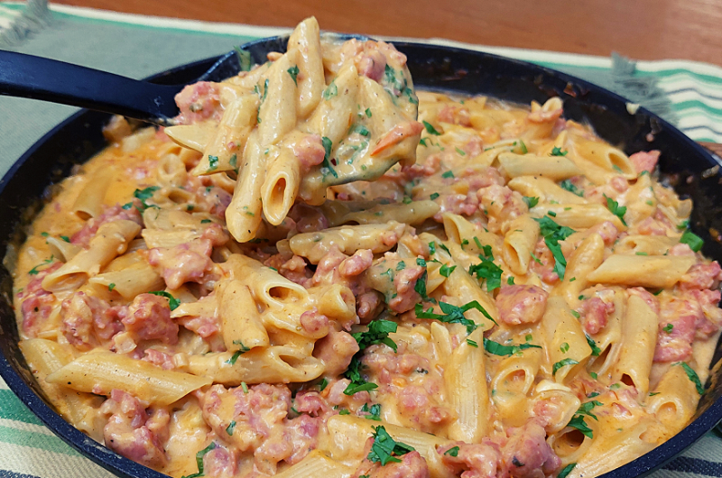

ve se aprende!

! macarrão para o slug !
(ﾉ◕ヮ◕)ﾉ Passos !! (ﾉ◕ヮ◕)ﾉ
✿✿✿✿✿✿
1. em uma panela, coloque água e espere ferver
2. coloque o macarrão de sua preferência (o liso ou o furado pdp)
3. tire o macarrão quando estiver cozido e tempere a gosto
⤑ receita do macarrão cremoso (essa porra ai da foto) ta aq embaixo ó:
caralho (ﾉ≧∀≦)ﾉ
thats all slug send salve big fan here S2
click here!!